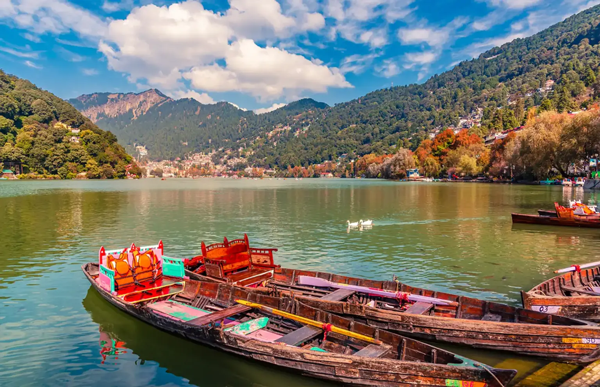
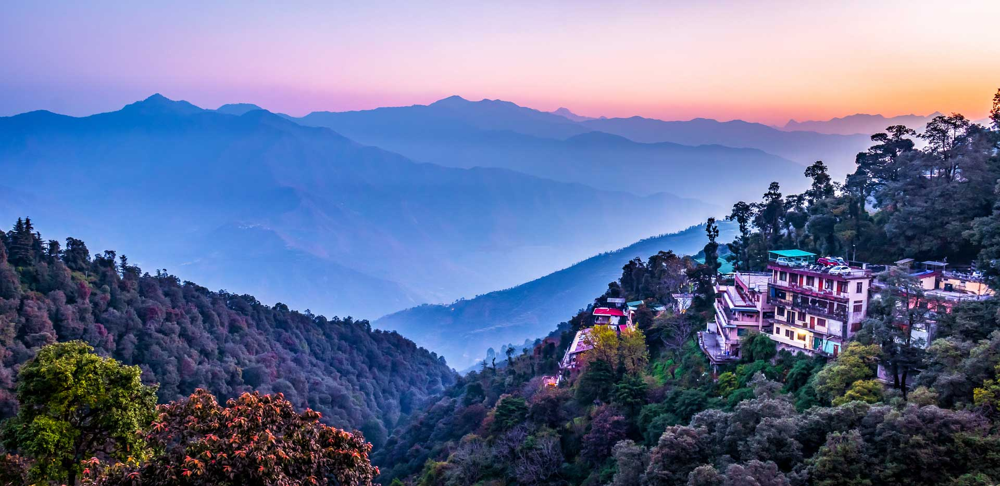
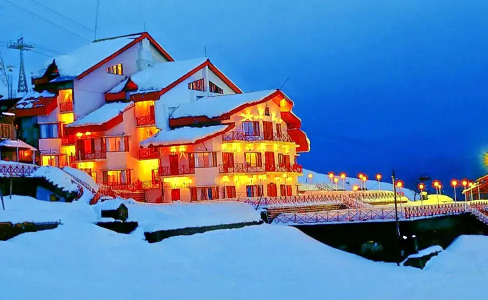
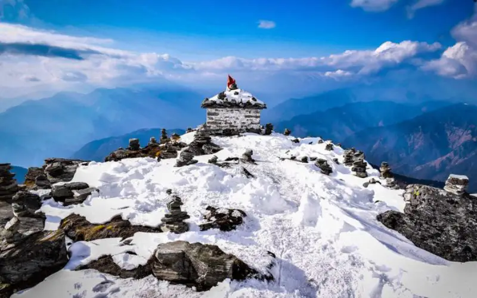
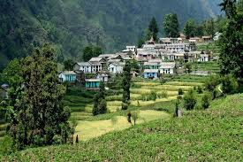
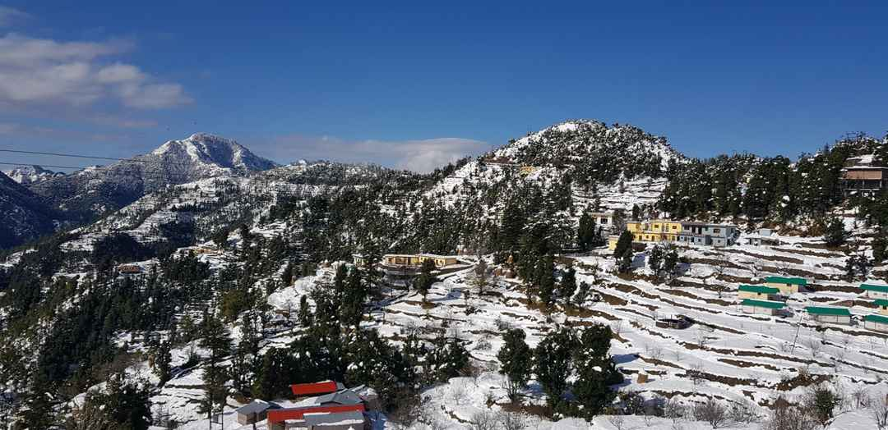
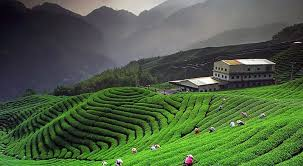

Uttarakhand Hillstations
Explore the breathtaking hill stations of Uttarakhand, offering a perfect blend of scenic beauty, spiritual serenity, and adventure. From the misty hills of Mussoorie to the snowy slopes of Auli, each destination has its own unique charm and attractions.

Nainital
Nestled around the beautiful Naini Lake, Nainital is a popular hill station known for its boating, colonial architecture, and pleasant climate. Visitors can enjoy a stroll along the Mall Road, visit the Nainital Zoo featuring rare Himalayan species, and trek to viewpoints like Snow View Point and Tiffin Top for panoramic views of the Kumaon hills.

Mussoorie
Dubbed the "Queen of Hills," Mussoorie is famous for its scenic views of the Doon Valley and snow-capped peaks of the Himalayas. Key attractions include Kempty Falls, Camel’s Back Road, and Gun Hill, one of the highest points accessible by cable car. The town offers vibrant markets, colonial heritage buildings, and cozy cafes perfect for a romantic getaway.

Auli
Auli is renowned as one of India’s premier skiing destinations with well-maintained slopes and panoramic views of the Nanda Devi and Mana peaks. Besides winter sports, Auli offers a scenic cable car ride (one of Asia’s longest), trekking routes, and beautiful meadows blooming with wildflowers in summer. The serene surroundings make it ideal for nature lovers.

Chopta
Known as the "Mini Switzerland of India," Chopta is a tranquil hamlet surrounded by dense forests of pine and deodar. It is the base for treks to Tungnath, the highest Shiva temple in the world, and Chandrashila peak, which offers stunning sunrise views over the Himalayas. Chopta is perfect for camping, birdwatching, and offbeat nature walks.

Lansdowne
A quiet, less commercialized hill station, Lansdowne offers serene landscapes, colonial-era churches, and quiet walks among pine forests. Popular spots include Tip-n-Top viewpoint, Bhulla Tal lake, and War Memorial. It is an excellent choice for travelers seeking peace, nature trails, and a break from crowded tourist hubs.

Ranikhet
Meaning “Queen’s Meadow,” Ranikhet is known for its lush green meadows, dense forests, and an 18-hole golf course maintained by the Indian Army. Visitors can explore the Jhula Devi Temple, Chaubatia Gardens, and enjoy the spectacular views of the snow-covered Himalayan peaks. The calm climate makes it suitable year-round.

Mukteshwar
Perched atop a cliff, Mukteshwar is famous for the ancient Mukteshwar Shiva Temple and awe-inspiring panoramic views of the Himalayas. The area is popular for adventure activities like rock climbing, rappelling, and trekking. It also has an orchard trail, birdwatching opportunities, and is less crowded than other hill stations.

Dhanaulti
Dhanaulti is an eco-friendly, offbeat hill station surrounded by thick oak and deodar forests. It is famous for its peaceful environment, eco-parks such as the Amber and Eco Parks, and adventure activities like zip-lining. Ideal for travelers looking for a quiet nature retreat away from the crowds.

Kausani
Known as the “Switzerland of India,” Kausani offers spectacular sunrise and sunset views over the Himalayas, including peaks like Nanda Devi and Trishul. The town is dotted with tea gardens, and visitors often explore the Baijnath Temple and the Anasakti Ashram, a serene spiritual retreat associated with Mahatma Gandhi.
Tour Details
- Duration: 7 Days / 6 Nights
- Best Time to Visit: March to June, September to November
- Price: ₹18,000 per person
- Includes: Transportation, Accommodation, Sightseeing, Guided Tours